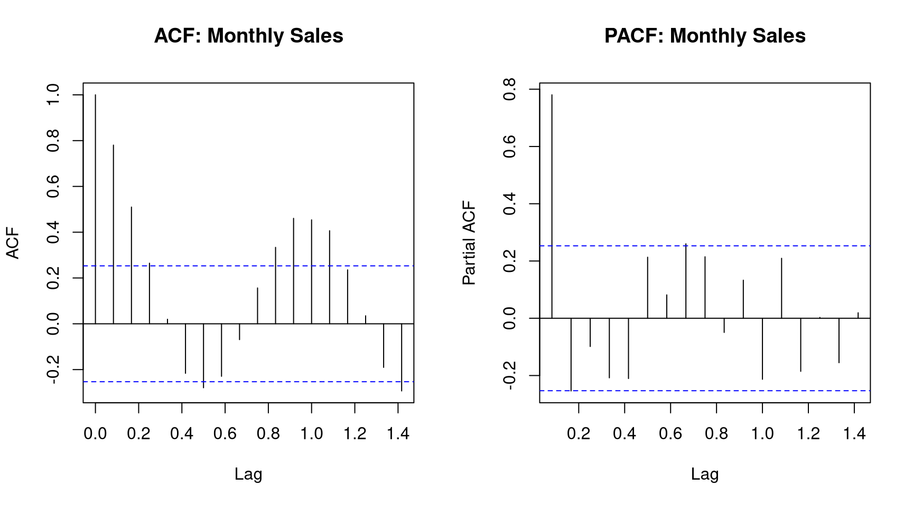
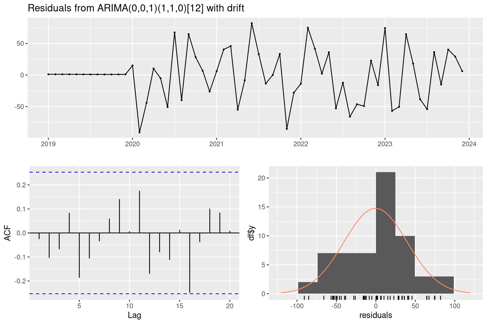
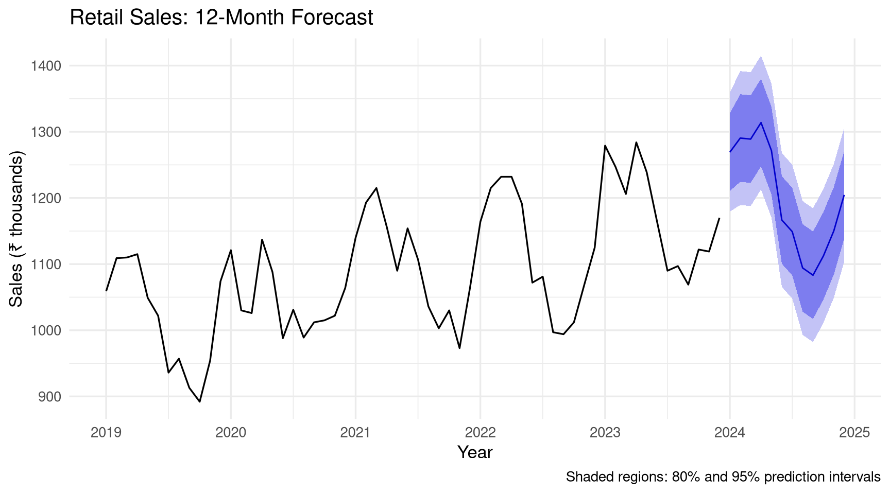

Most time series models require stationarity — constant mean, variance, and autocovariance over time.
Code
par(mfrow =c(1, 2))acf(monthly_sales, main ="ACF: Monthly Sales")pacf(monthly_sales, main ="PACF: Monthly Sales")par(mfrow =c(1, 1))

Figure 12.3: ACF and PACF plots help identify appropriate ARIMA orders.
Code
library(tseries)# Augmented Dickey-Fuller test# H₀: series has a unit root (non-stationary)# H₁: series is stationaryadf.test(monthly_sales)#> #> Augmented Dickey-Fuller Test#> #> data: monthly_sales#> Dickey-Fuller = -5.5889, Lag order = 3, p-value = 0.01#> alternative hypothesis: stationary# If non-stationary, differencing can helpadf.test(diff(monthly_sales))#> #> Augmented Dickey-Fuller Test#> #> data: diff(monthly_sales)#> Dickey-Fuller = -3.5618, Lag order = 3, p-value = 0.04412#> alternative hypothesis: stationary
12.4 ARIMA Models
ARIMA(p, d, q) models combine: - AR(p): Autoregressive — depends on p past values - I(d): Integrated — d-th order differencing for stationarity - MA(q): Moving average — depends on q past errors
For seasonal data, use SARIMA(p, d, q)(P, D, Q)[m].
Code
# auto.arima selects the best model automaticallym_arima<-auto.arima(monthly_sales, seasonal =TRUE, stepwise =FALSE, approximation =FALSE)summary(m_arima)#> Series: monthly_sales #> ARIMA(0,0,1)(1,1,0)[12] with drift #> #> Coefficients:#> ma1 sar1 drift#> 0.5171 -0.6805 3.2357#> s.e. 0.1399 0.1161 0.5353#> #> sigma^2 = 2103: log likelihood = -254.07#> AIC=516.14 AICc=517.07 BIC=523.63#> #> Training set error measures:#> ME RMSE MAE MPE MAPE MASE#> Training set -0.4338316 39.71361 30.15103 -0.142812 2.743794 0.5121194#> ACF1#> Training set -0.02565537
Code
checkresiduals(m_arima)#> #> Ljung-Box test#> #> data: Residuals from ARIMA(0,0,1)(1,1,0)[12] with drift#> Q* = 10.991, df = 10, p-value = 0.3582#> #> Model df: 2. Total lags used: 12

Figure 12.4: ARIMA model residual diagnostics.
12.5 Forecasting
Code
forecast_result<-forecast(m_arima, h =12)autoplot(forecast_result)+labs(title ="Retail Sales: 12-Month Forecast", x ="Year", y ="Sales (₹ thousands)", caption ="Shaded regions: 80% and 95% prediction intervals")+theme_minimal(base_size =13)

Figure 12.5: 12-month ahead forecast with 80% and 95% prediction intervals.
Code
# Hold-out validation: train on first 48 months, test on last 12train<-head(monthly_sales, 48)test<-tail(monthly_sales, 12)m_train<-auto.arima(train, seasonal =TRUE)fc<-forecast(m_train, h =12)# Accuracy metricsaccuracy(fc, test)#> ME RMSE MAE MPE MAPE MASE#> Training set -0.3323314 37.26928 27.09198 -0.1320103 2.534815 0.4707100#> Test set 7.4850869 47.88616 41.11243 0.5669466 3.472503 0.7143086#> ACF1 Theil's U#> Training set 0.03242358 NA#> Test set 0.09449067 0.8920096
Download monthly diesel or petrol price data for India from the PPAC website. Import and convert to a ts object. Plot the series and describe the trend and any seasonality.
Decompose the price series using STL. Plot the components and estimate the seasonal strength.
Fit an ARIMA model using auto.arima(). Print the selected order and the model summary.
Produce a 24-month forecast. Visualise it and write a brief interpretation of the projection.
Challenge: Build a comparison of three forecasting methods — Exponential Smoothing, ARIMA, and a linear trend model — evaluated by out-of-sample RMSE on a holdout set of 12 months.
Source Code
# Time Series Analysis {#sec-timeseries}```{r}#| label: setup-ch14#| include: falselibrary(tidyverse)library(forecast)library(tsibble)library(feasts)set.seed(42)```::: {.callout-note}## Learning ObjectivesBy the end of this chapter, you will be able to:- Create and manipulate time series objects in R- Decompose a time series into trend, seasonal, and remainder components- Test for stationarity using the ADF test- Fit ARIMA models using `auto.arima()`- Produce and visualise forecasts with confidence intervals:::## Time Series Objects {#sec-ts-objects}```{r}#| label: ts-create# Base R ts object: monthly retail sales (simulated)set.seed(99)monthly_sales <-ts(data =round(1000+seq(0, 200, length.out =60) +# Trend100*sin(2* pi * (1:60) /12) +# Seasonalityrnorm(60, 0, 40)), # Noisestart =c(2019, 1), # January 2019frequency =12# Monthly)print(monthly_sales)``````{r}#| label: fig-ts-plot#| fig-cap: "Monthly retail sales time series with trend and seasonal patterns."#| fig-width: 9#| fig-height: 4autoplot(monthly_sales) +labs(title ="Monthly Retail Sales (Simulated)",x ="Year", y ="Sales (₹ thousands)") +theme_minimal(base_size =13)```## Time Series Decomposition {#sec-decomposition}### Classical Decomposition {#sec-classical-decomp}```{r}#| label: fig-decomp#| fig-cap: "STL decomposition separating trend, seasonality, and remainder."#| fig-width: 9#| fig-height: 7decomp <-stl(monthly_sales, s.window ="periodic")autoplot(decomp) +labs(title ="STL Decomposition of Monthly Sales") +theme_minimal(base_size =12)``````{r}#| label: decomp-extract# Extract componentstrend <- decomp$time.series[, "trend"]seasonal <- decomp$time.series[, "seasonal"]remainder <- decomp$time.series[, "remainder"]# Seasonal strengthvar(seasonal) / (var(seasonal) +var(remainder))```## Stationarity {#sec-stationarity}Most time series models require **stationarity** — constant mean, variance, and autocovariance over time.```{r}#| label: fig-acf-pacf#| fig-cap: "ACF and PACF plots help identify appropriate ARIMA orders."#| fig-width: 9#| fig-height: 5par(mfrow =c(1, 2))acf(monthly_sales, main ="ACF: Monthly Sales")pacf(monthly_sales, main ="PACF: Monthly Sales")par(mfrow =c(1, 1))``````{r}#| label: stationarity-testlibrary(tseries)# Augmented Dickey-Fuller test# H₀: series has a unit root (non-stationary)# H₁: series is stationaryadf.test(monthly_sales)# If non-stationary, differencing can helpadf.test(diff(monthly_sales))```## ARIMA Models {#sec-arima}**ARIMA(p, d, q)** models combine:- **AR(p):** Autoregressive — depends on p past values- **I(d):** Integrated — d-th order differencing for stationarity- **MA(q):** Moving average — depends on q past errorsFor seasonal data, use **SARIMA(p, d, q)(P, D, Q)[m]**.```{r}#| label: arima-fit# auto.arima selects the best model automaticallym_arima <-auto.arima( monthly_sales,seasonal =TRUE,stepwise =FALSE,approximation =FALSE)summary(m_arima)``````{r}#| label: fig-arima-diag#| fig-cap: "ARIMA model residual diagnostics."#| fig-width: 9#| fig-height: 6checkresiduals(m_arima)```## Forecasting {#sec-forecasting}```{r}#| label: fig-forecast#| fig-cap: "12-month ahead forecast with 80% and 95% prediction intervals."#| fig-width: 9#| fig-height: 5forecast_result <-forecast(m_arima, h =12)autoplot(forecast_result) +labs(title ="Retail Sales: 12-Month Forecast",x ="Year", y ="Sales (₹ thousands)",caption ="Shaded regions: 80% and 95% prediction intervals") +theme_minimal(base_size =13)``````{r}#| label: forecast-accuracy# Hold-out validation: train on first 48 months, test on last 12train <-head(monthly_sales, 48)test <-tail(monthly_sales, 12)m_train <-auto.arima(train, seasonal =TRUE)fc <-forecast(m_train, h =12)# Accuracy metricsaccuracy(fc, test)```## The tsibble Framework {#sec-tsibble}For modern, tidy time series workflows:```{r}#| label: tsibble-demolibrary(tsibble)library(feasts)# Convert to tsibblesales_tsibble <-as_tsibble(monthly_sales)# Decomposesales_tsibble |>model(STL(value ~trend(window =13) +season(window ="periodic"))) |>components() |>autoplot() +theme_minimal(base_size =11) +labs(title ="STL Decomposition (tsibble/feasts)")```## Exercises {#sec-ch14-exercises}1. Download monthly diesel or petrol price data for India from the PPAC website. Import and convert to a `ts` object. Plot the series and describe the trend and any seasonality.2. Decompose the price series using STL. Plot the components and estimate the seasonal strength.3. Fit an ARIMA model using `auto.arima()`. Print the selected order and the model summary.4. Produce a 24-month forecast. Visualise it and write a brief interpretation of the projection.5. **Challenge:** Build a comparison of three forecasting methods — Exponential Smoothing, ARIMA, and a linear trend model — evaluated by out-of-sample RMSE on a holdout set of 12 months.